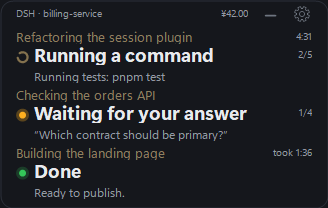

Unofficial · Windows 10/11
See what DeepSeek Harness is doing.
A small floating widget for DeepSeek Harness (DSH): live agent status, plan approvals, subagents, completion and errors — without keeping the main window in front.

Built for the way DSH works
The widget reads the session journals DSH already writes. It does not modify DSH and does not upload prompt contents.
Live agent status
Thinking, running a command, reading a file, searching the web — with the exact tool detail.
Approvals and questions
See when the agent is waiting for plan approval or an answer, and what it is waiting for.
Subagents
When the parent turn is done but child sessions are still running, the widget says so.
Done and error states
A quiet completion sound, a preview of the answer, and a persistent error until you acknowledge it.
Portable DSH friendly
Discovers DSH via registry, running process, DSH_HOME, default profile and uninstall entry.
No telemetry
Local journals and an optional balance request only. No account password, no prompt upload.
Install in a minute
Windows 10 (21H2+) or Windows 11, x64. The installer is per-user and does not need administrator rights.
Download
Get DSHWidget-Setup-1.0.7.exe from the latest release.
Run
If SmartScreen says “Unknown publisher”, choose “More info” → “Run anyway”. The installer is unsigned.
Open DSH
Choose “With DeepSeek Harness” and the widget appears when DSH starts.
Portable DSH is supported. If no DSH profile is found, the widget installs in manual mode and keeps working.